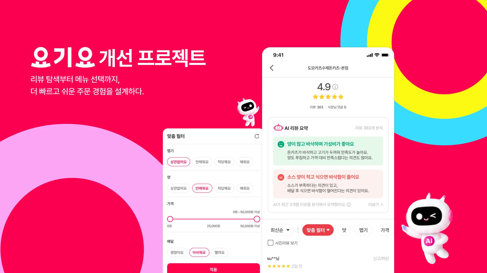
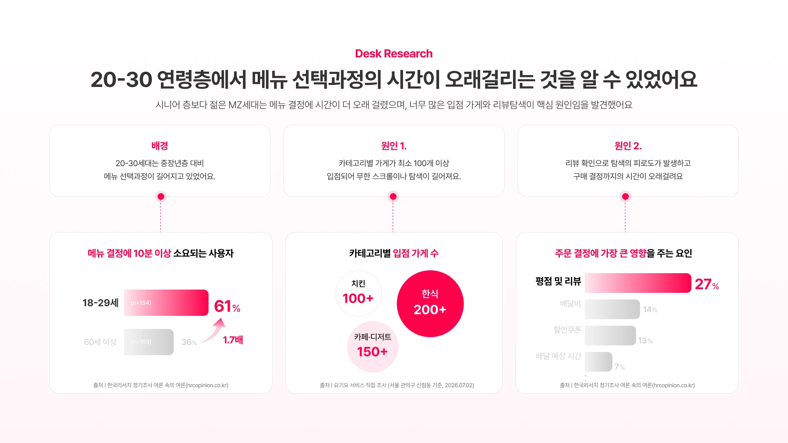
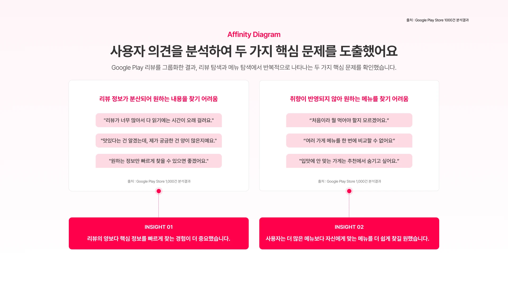
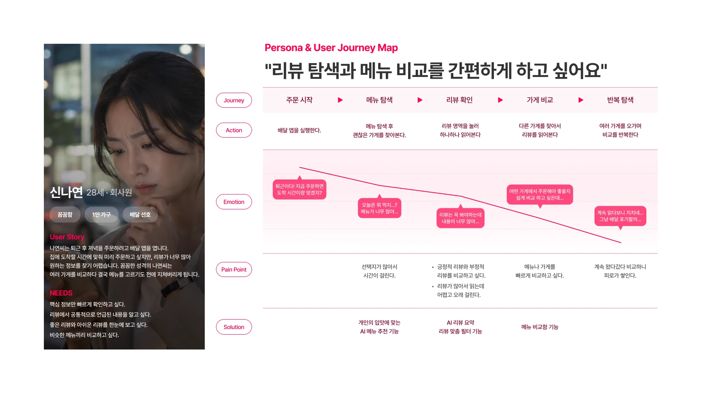
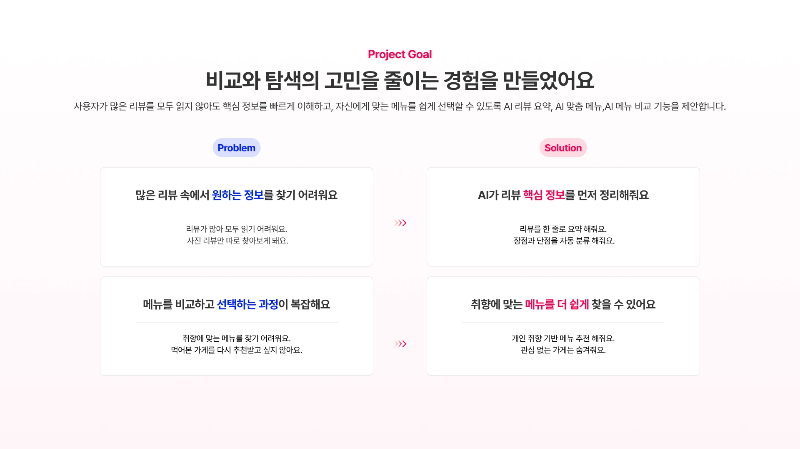
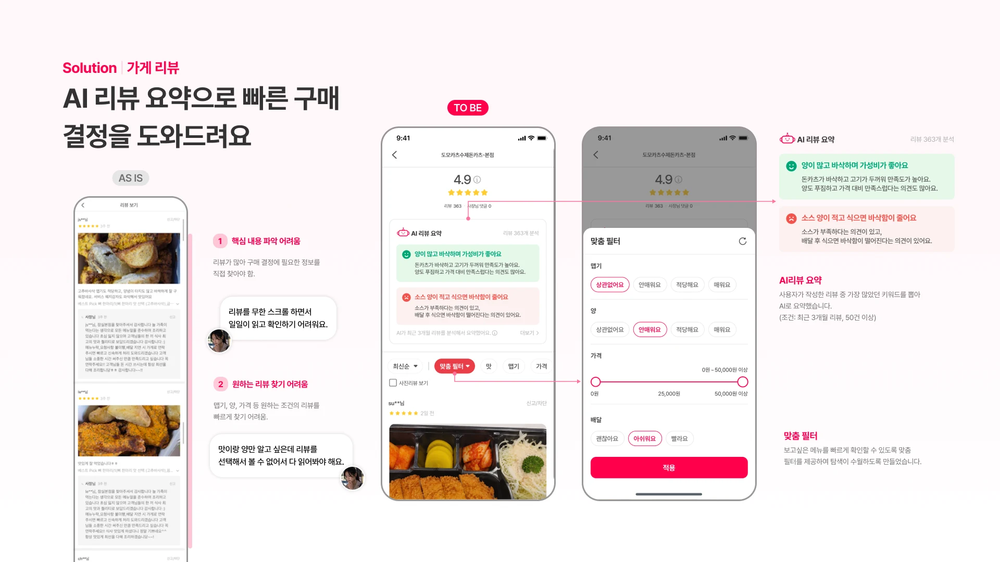
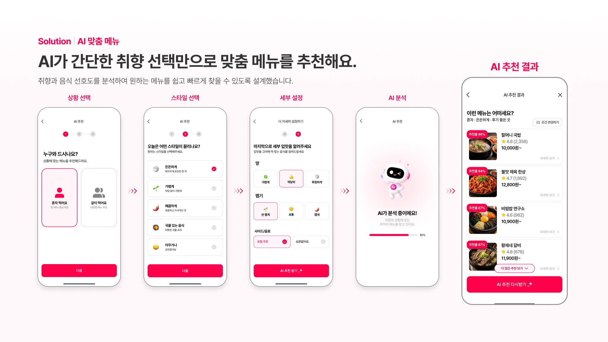
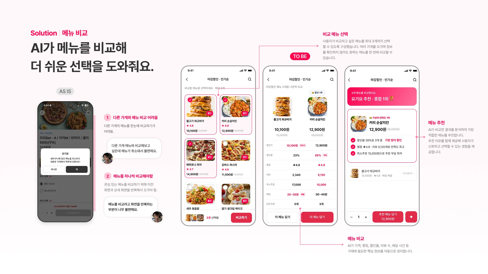
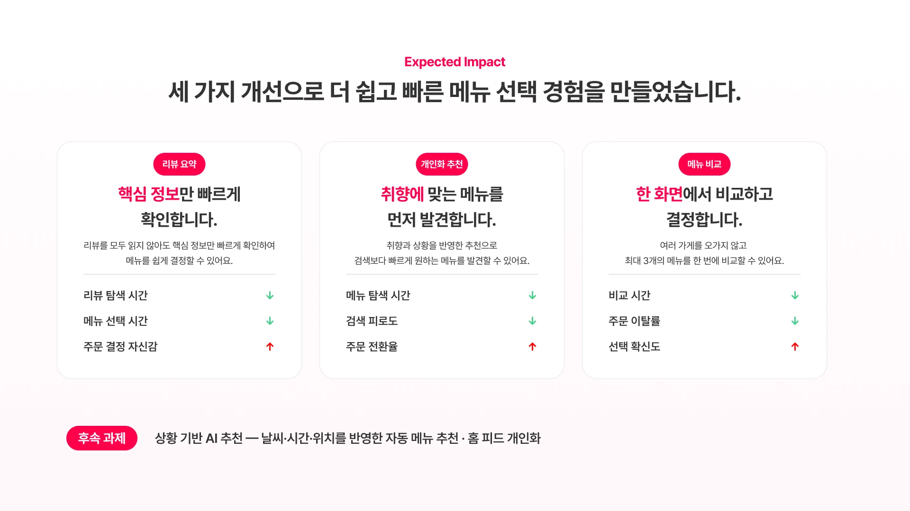
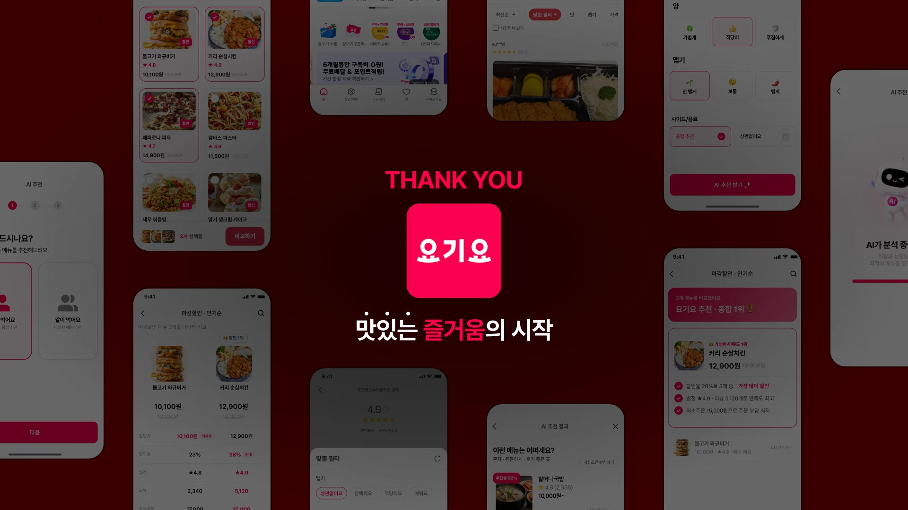

← 프로젝트 목록
04 · MOBILE
요기요 개선 프로젝트
리뷰 탐색부터 메뉴 선택까지,
더 빠르고 쉬운 주문 경험을 설계하다
- 구분
- VOC 기반 미니 프로젝트
- 기간
- 2026.06 – 2026.07
- 역할
- UI, PM
- 기여도
- UI 80% · 기획 75%
- Tool
- Figma

Desk Research

Affinity Diagram

Persona & User Journey Map

Project Goal

Solution: 가격 리뷰

Solution: AI 맞춤 메뉴

Solution: 메뉴 비교

Expected Impact

Thank you
